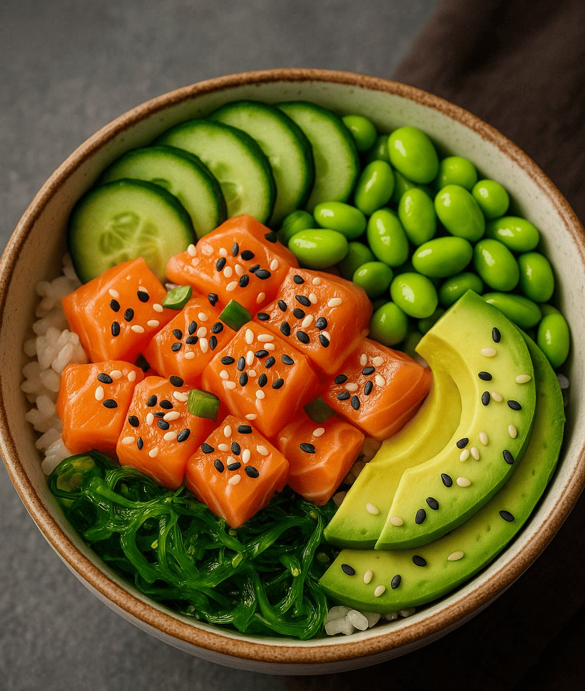

Why sekce
Algoritmus nevybírá náhodně. Skládá jídla na míru podle desítek souvislostí.
Tým vzdělaných odborníků připravil algoritmus, který vybírá zdravá jídla a skládá vám je na míru podle vašich cílů, preferencí a nutričních potřeb.
Každý návrh nevychází jen z kalorií. FitLime porovnává více než 25 parametrů, hledá nejlepší rovnováhu mezi živinami a pak vybírá z databáze 350+ zdravých jídel ta, která do sebe dávají smysl jako celek.
25+
výživových hodnot jídla
350+
zdravých jídel v databázi

Komplexní pohled
Radar ukazuje, že dobré jídlo je vždy o více vrstvách najednou.
Stejný princip už používáte v sekci „Jak FitLime funguje“. Tady je nasazený jako součást Why sekce.
Středomořský cizrnový salát s fetou a olivami